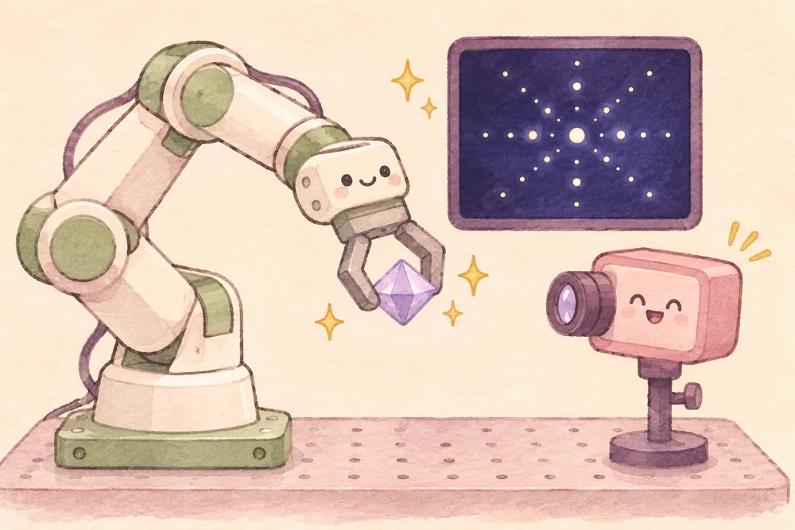

A crystal may look like a tiny stone. Inside, its atoms form an orderly pattern. Before many experiments, we need to know which way that pattern points.
Laue diffraction makes that orientation visible.
Shine X-rays on the crystal and collect a pattern of spots. Turn the crystal, and the pattern changes.
Your challenge: help a robot, cameras and software work together, so finding and measuring a sample takes less manual effort.
For people who like making things work.
Mix hands-on physics, coding and a little engineering.

The team: a robot to move, cameras to see, and a diffraction pattern to understand. Concept illustration.
02 / Already in the lab
A real setup to build on.
Start with existing tools, then choose a useful next step.
The existing Laue interface in action: the robot picks up the sample holder and moves it towards the cameras. 9 seconds · 3× speed.
Robot. Two cameras.
One experiment.
The current interface connects a Meca500 robot arm, two sample cameras and Laue image acquisition. The operator can position a sample, use the camera views and save a diffraction image.
The student-project opportunity:
develop automatic sample recognition, repeatable photo capture or better coordination between these steps.
Follow the three main steps. These screenshots show the current tools; your thesis could help connect them.
01 / Move the sample
The robot brings the sample holder to a known position. A useful next step is to make a whole sequence repeatable.
Existing setup: robot positioning and instrument controls.
Two camera views help locate the sample. 27 seconds · 3× speed.
Record and save the diffraction pattern. 14 seconds · 3× speed.
03 / Your possible project
Build something the lab can use.
Pick a direction, then shape a manageable question with us.
Three starting points
IDEA / 01
Teach the camera to see.
Find a small crystal in camera images. Start with simple image processing, then test how well it works on different samples.
Computer vision · Python
Bachelor’s starting point
Build and assess a crystal finder on a labelled collection of sample photographs.
Possible Master’s extension
Use two camera views to estimate the sample position and test feedback-guided alignment.
IDEA / 02
Make the robot repeat it.
Turn a series of manual movements into a clear, repeatable workflow, with useful checks and feedback for the operator.
Robotics · Instrument control
Bachelor’s starting point
Implement and test one repeatable motion or photo-taking sequence with the existing robot interface.
Possible Master’s extension
Connect motion, camera feedback and image collection into a supervised workflow; evaluate accuracy and reliability.
IDEA / 03
From picture to orientation.
Capture images automatically and help the software recognise useful features in a Laue pattern.
Image analysis · Diffraction
Bachelor’s starting point
Detect diffraction spots and compare their positions with manually marked examples.
Possible Master’s extension
Match measured and simulated patterns, estimate crystal orientation and test how robust the method is.
These are possible directions, not fixed thesis descriptions. We’ll agree on the scope, available hardware and a practical goal together. Lab work starts with training.
Python
Robot control
Computer vision
Experimental design
Testing with real hardware
Go a little deeper
Real research. A place to start.
These are research papers and resources, so they go beyond the short explanations above.
Visuals: AI-generated banner painting and concept illustration; these are artistic impressions. Lab screenshots and recordings: Xunyang Hong. Videos are shown at 3× speed. Schematic demos are for explanation, not measured data.
Your next step
Curious?
Let’s talk about your thesis.
Come by the office
Y36 H50
, look for
Johan Chang
and discuss a potential project. Bring your questions, your interests, or simply your curiosity.
We can shape the scope around a Bachelor’s or Master’s thesis and your experience.